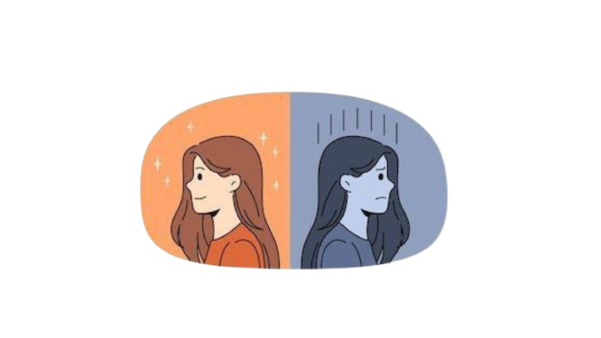
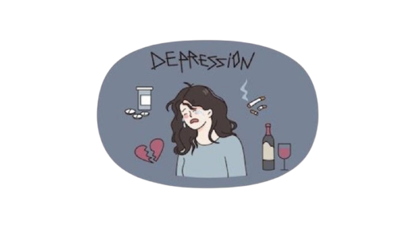
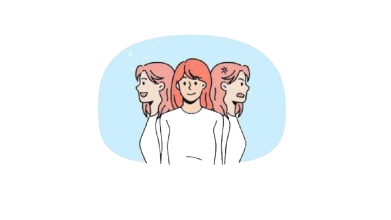
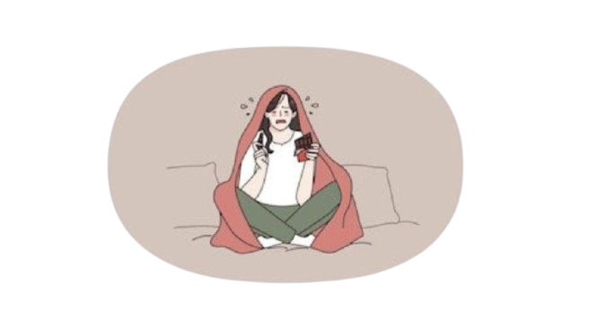
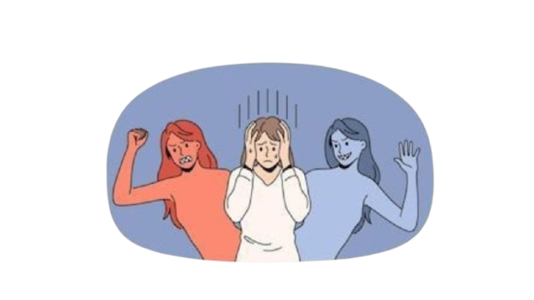
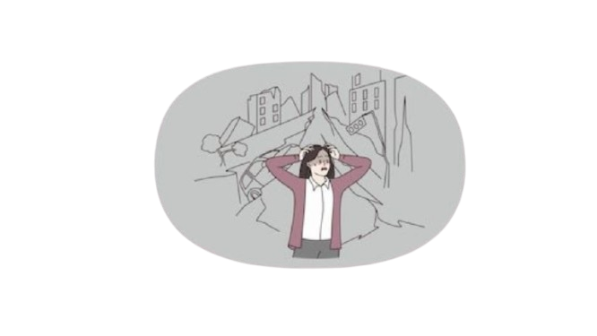
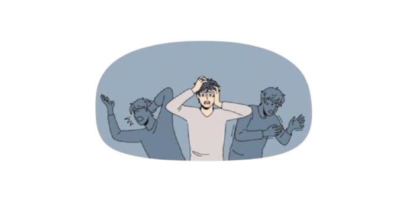
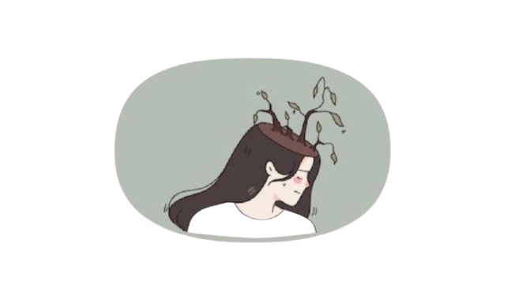

Apa Yang Sedang Kamu Rasakan?
Yuk, pilih perasaan yang sedang kamu hadapi dan temukan bantuan yang kamu butuhkan sekarang!

Keluarga
& Hubungan

Depresi

Kecemasan

Stres

Trauma

Pemadaman

Gangguan Mood

Kecanduan
Terapi Keluarga dan Hubungan: Meraih Harmoni Bersama
Terapi keluarga dan hubungan adalah bentuk terapi bicara yang bertujuan membantu individu, pasangan, atau keluarga mengatasi berbagai masalah hubungan.